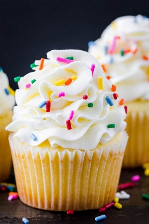

Delicious Vanilla Cupcakes

These are super easy to make homemade cupcakes that
are perfect for birthday parties and baby showers.
This recipe makes exactly 12 super delicious cupcakes that taste way better than
boxed cupcake mixes.
Ingredients
- 1 1/4 cups all-purpose flour
- 1 1/4 teaspoon baking powder
- 1/2 teaspoon salt
- 1/2 cup unsalted butter
- 3/4 cup granulated sugar
- 2 large eggs
- 2 teaspoons vanilla extract
- 1 1/2 cup buttermilk
Steps
- In a medium bowl, whisk together dry ingredients:
flour, baking powder, and salt.
- In a second bowl (or bowl of your stand mixer), beat together softened butter and
sugar on medium-high speed 5 minutes until thick and fluffy.
- Beat in eggs 1 at a time, mixing to incorporate with each egg,
then blend in vanilla and scrape down the bowl.
- Reduce mixer to medium speed and add the flour in thirds,
alternating with adding the 1/2 cup buttermilk and beating well between additions.
- Pour batter into 12 lined muffin tins, filling 2/3 full.
Bake in the center of the oven at 350 degrees F for 20-23 minutes,
or until a toothpick inserted into the center comes out clean.
- Let cool 5 minutes in the pan then remove cupcakes to a wire rack to cool completely.
- Once your cupcakes have cooled to room temperature, its time to decorate.
You are free to use frosting of your choice. Add a bit of sprinkles and your cupcakes are good to go.